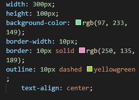

Visam simplificar o código. Quando usamos Shorthands agrupamos várias tags em apenas uma sem alterar as propriedades da página. Como no exemplo abaixo:
Para conseguir este efeito utlizamos o seguinte código:
Como pudemos ver colocamos todos os valores referentes as tags border e outline em uma única linha ao invés de especificar item por item. Na hora especificar valores em um shorthand a ordem é sempre no sentido horário, ou seja, da direita para a esquerda. Sendo assim a organização fica sendo topo, direita, baixo e esquerda.